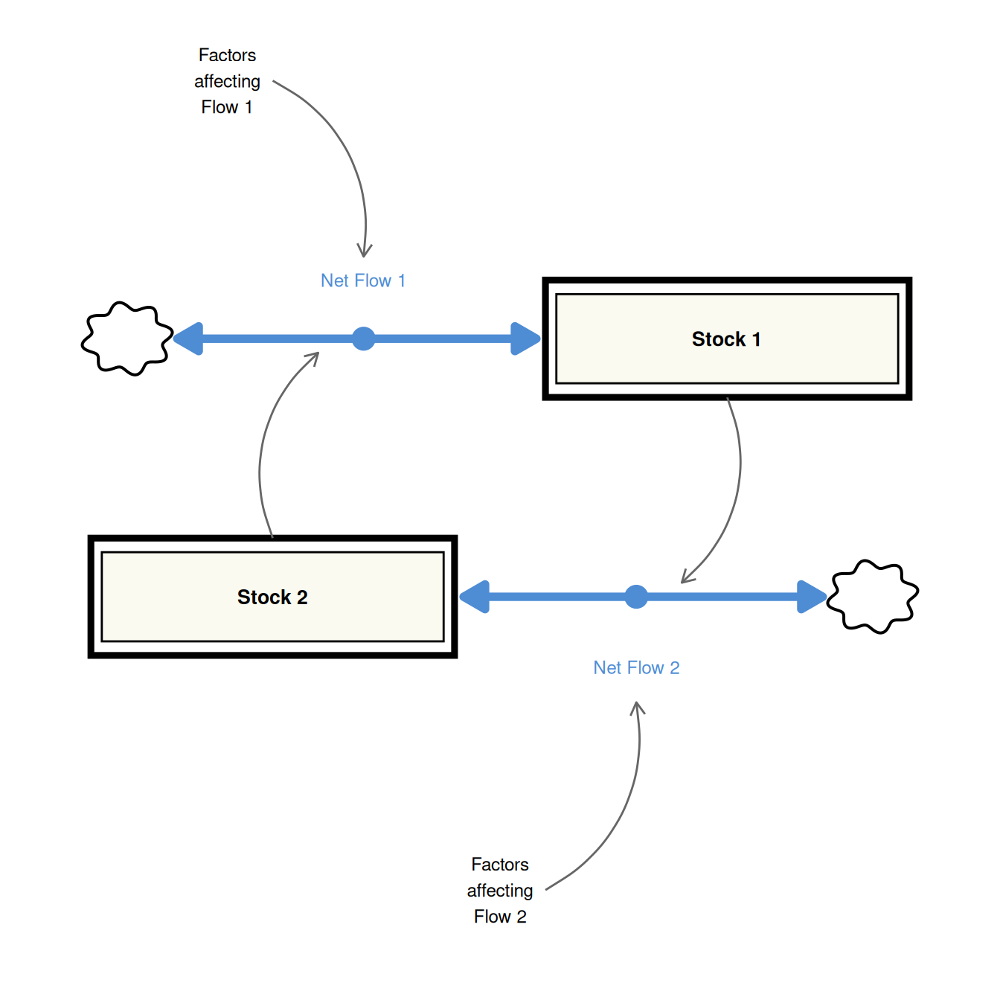
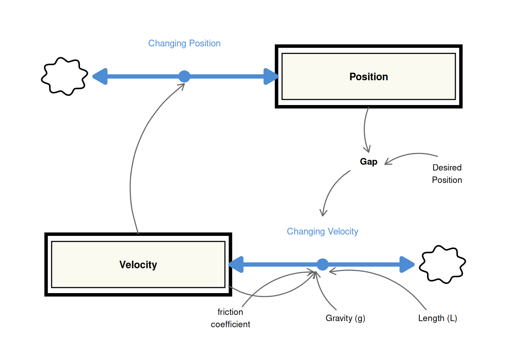
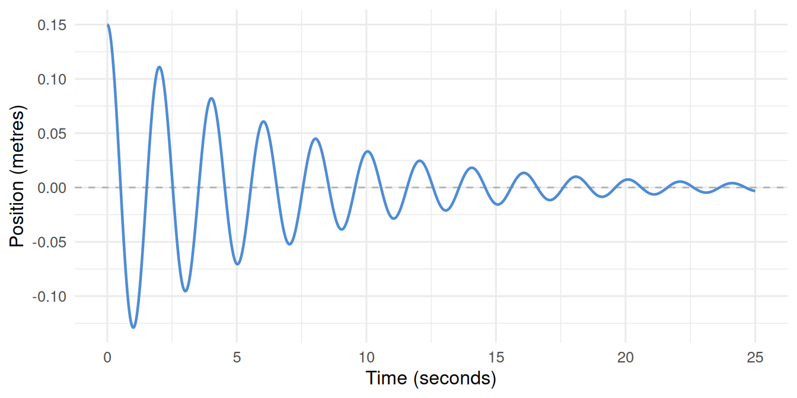
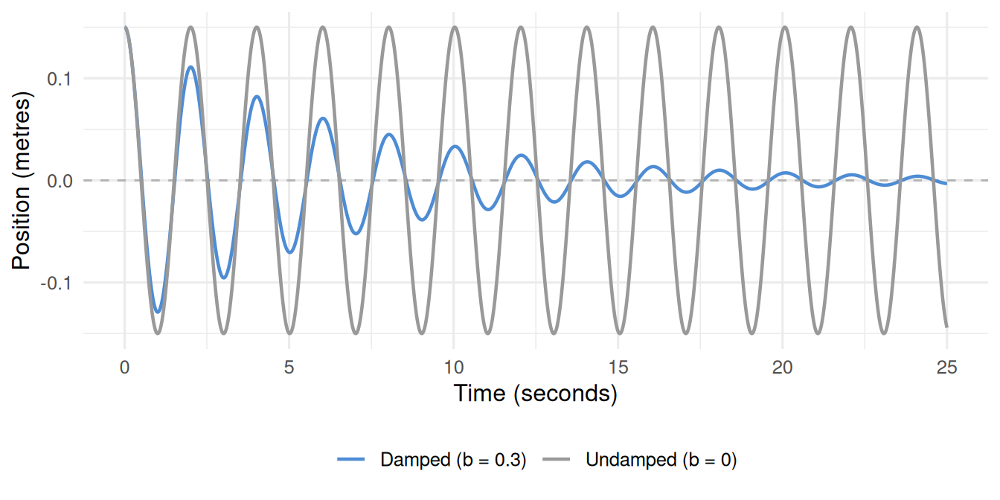
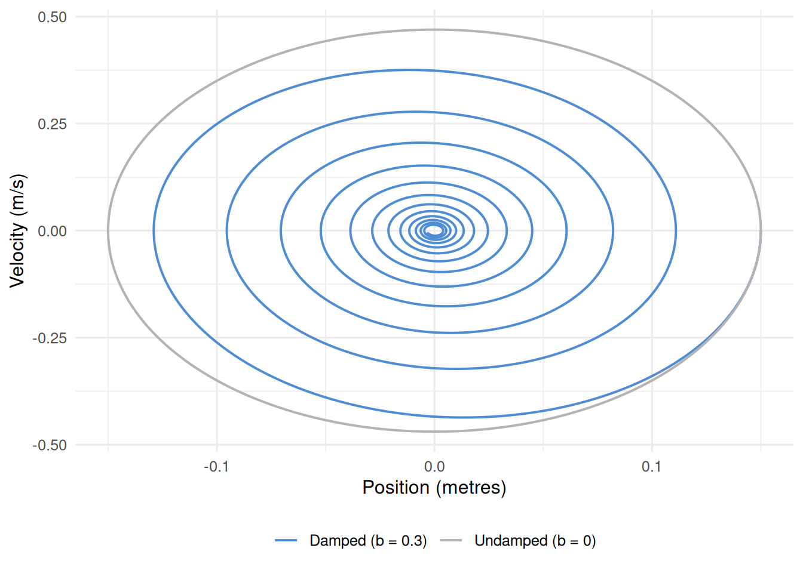
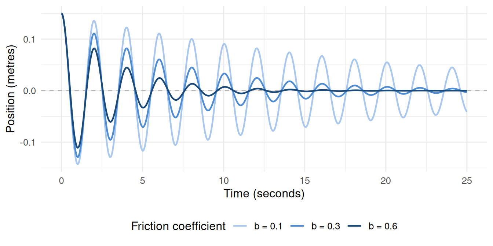

Tutorial 8: Damped Oscillations — The Real Pendulum
How friction adds a new factor to the generic structure and settles the system to equilibrium
From Sustained to Damped Oscillation
Tutorial 7 showed that two stocks with cross-coupled flows produce sustained oscillation — cycles that repeat indefinitely at constant amplitude. The frictionless pendulum was our example: velocity driving the change in position, and position driving the change in velocity through a restoring force.
But the frictionless pendulum is simplistic In the real world, a swinging pendulum loses energy with every cycle — to air resistance, to bearing friction at the pivot, to internal flexing of the rod. The oscillations do not sustain forever; they decay. The pendulum settles, gradually coming to rest at its equilibrium position.
This is damped oscillation: the same cross-coupled two-stock structure as Tutorial 7, but with an additional force that steadily removes energy from the system.
The Generic Structure, Revisited
The generic structure for sustained oscillation has a crucial feature we set aside in Tutorial 7: the diagram explicitly reserves space for factors affecting each flow.
In Tutorial 7, the pendulum’s Net Flow 1 (Changing Position) had no external factors — it was driven entirely by the other stock (Velocity). The “Factors affecting Flow 1” box was structurally empty. Net Flow 2 (Changing Velocity) did have factors: Gap, gravity, and pendulum length.
In the real world, Flow 2 has one more factor that Tutorial 7 ignored: friction. Air resistance and bearing friction act against the direction of motion — they oppose velocity, reducing the rate at which velocity changes with each swing. Friction is the missing entry in the “Factors affecting Flow 2” box.
Friction as a Structural Addition
Kinetic friction in a pendulum acts as viscous damping: the drag force is proportional to the current velocity and always opposes the direction of motion. In stock-and-flow terms, this adds a second term to the Changing Velocity flow:
- Restoring acceleration — driven by the gap from equilibrium, gravity, and length (as in Tutorial 7).
- Friction drag — proportional to current velocity, acting against it.
The new parameter is the friction coefficient, \(b\). A small value of \(b\) produces slow, gradual decay; a larger value causes faster settling.
Updated Stock-and-Flow Diagram
The structure is identical to Tutorial 7 with two additions to the Changing Velocity flow: the friction coefficient parameter, and a new information link from the Velocity stock back to its own flow (because the drag force depends on how fast the pendulum is currently moving).

Model Equations
The only change from Tutorial 7 is the addition of the friction drag term to the Changing Velocity equation:
\[\frac{d(\text{Position})}{dt} = \text{Velocity}\]
\[\frac{d(\text{Velocity})}{dt} = \frac{g}{L} \times \text{Gap} \ - \ b \times \text{Velocity}\]
\[\text{Gap} = \text{Desired Position} - \text{Position}\]
The friction term \(b \times \text{Velocity}\) carries the correct sign automatically: when the pendulum moves right (Velocity \(> 0\)), the term is positive and is subtracted — reducing the rightward acceleration. When it moves left (Velocity \(< 0\)), the term is negative and subtracting it increases the changing velocity — slowing the leftward motion. Friction always opposes the direction of movement, regardless of which way the bob swings.
R Implementation
library(deSolve)
library(tidyverse)The model follows the standard deSolve function signature. Variable names use the project’s prefix convention (s_ stocks, p_ parameters, c_ converters, f_ flows).
model_damped <- function(time, stocks, params) {
with(as.list(c(stocks, params)), {
c_gap <- p_desired_position - s_position
f_changing_position <- s_velocity
f_changing_velocity <- (p_gravity / p_length_of_pendulum) * c_gap -
p_friction_coeff * s_velocity
ds_position_dt <- f_changing_position
ds_velocity_dt <- f_changing_velocity
return(list(
c(ds_position_dt, ds_velocity_dt),
gap = c_gap
))
})
}
stocks <- c(s_position = 0.15, s_velocity = 0)
params <- c(
p_desired_position = 0,
p_gravity = 9.8,
p_length_of_pendulum = 1,
p_friction_coeff = 0.3
)The pendulum is released from 0.15 metres with zero initial velocity, same as Tutorial 7. The friction coefficient is set to 0.3 — small enough to produce slow, gradual decay rather than rapid settling.
Setting p_friction_coeff = 0 recovers the undamped Tutorial 7 model exactly; the same function covers both cases.
sim_time <- seq(0, 25, 0.01)
sim_damped <- ode(
times = sim_time,
y = stocks,
parms = params,
func = model_damped,
method = "rk4"
) |>
as_tibble() |>
mutate(across(everything(), as.numeric))Position Over Time
sim_damped |>
ggplot(aes(x = time, y = s_position)) +
geom_hline(yintercept = 0, linetype = "dashed", colour = "grey70", linewidth = 0.5) +
geom_line(colour = "#4e8cd4", linewidth = 0.8) +
labs(x = "Time (seconds)", y = "Position (metres)") +
theme_minimal(base_size = 12)
Undamped vs Damped: Direct Comparison
params_undamped <- replace(params, "p_friction_coeff", 0)
sim_undamped <- ode(
times = sim_time,
y = stocks,
parms = params_undamped,
func = model_damped,
method = "rk4"
) |>
as_tibble() |>
mutate(across(everything(), as.numeric), label = "Undamped (b = 0)")
sim_damped_labelled <- sim_damped |>
mutate(label = "Damped (b = 0.3)")
bind_rows(sim_undamped, sim_damped_labelled) |>
ggplot(aes(x = time, y = s_position, colour = label)) +
geom_hline(yintercept = 0, linetype = "dashed", colour = "grey70", linewidth = 0.5) +
geom_line(linewidth = 0.8) +
scale_colour_manual(values = c("Undamped (b = 0)" = "grey60",
"Damped (b = 0.3)" = "#4e8cd4")) +
labs(x = "Time (seconds)", y = "Position (metres)", colour = NULL) +
theme_minimal(base_size = 12) +
theme(legend.position = "bottom")
Phase Portrait: Ellipse to Spiral
The phase portrait — velocity plotted against position — reveals the difference in structure most clearly. The undamped pendulum traces a closed ellipse, returning to exactly the same state each cycle. The damped pendulum traces an inward spiral, each loop slightly smaller than the last, converging on the origin.
bind_rows(
sim_undamped |> select(s_position, s_velocity) |> mutate(label = "Undamped (b = 0)"),
sim_damped_labelled |> select(s_position, s_velocity) |> mutate(label = "Damped (b = 0.3)")
) |>
ggplot(aes(x = s_position, y = s_velocity, colour = label)) +
geom_path(linewidth = 0.7) +
scale_colour_manual(values = c("Undamped (b = 0)" = "grey70",
"Damped (b = 0.3)" = "#4e8cd4")) +
labs(x = "Position (metres)", y = "Velocity (m/s)", colour = NULL) +
theme_minimal(base_size = 12) +
theme(legend.position = "bottom")
Sensitivity: How Much Friction Changes the Behaviour
friction_levels <- c(0.1, 0.3, 0.6)
sim_sensitivity <- map_dfr(friction_levels, function(b) {
p <- replace(params, "p_friction_coeff", b)
ode(times = sim_time, y = stocks, parms = p,
func = model_damped, method = "rk4") |>
as_tibble() |>
mutate(across(everything(), as.numeric),
label = paste0("b = ", b))
})
sim_sensitivity |>
ggplot(aes(x = time, y = s_position, colour = label)) +
geom_hline(yintercept = 0, linetype = "dashed", colour = "grey70", linewidth = 0.5) +
geom_line(linewidth = 0.8) +
scale_colour_manual(values = c("b = 0.1" = "#a8c8f0",
"b = 0.3" = "#4e8cd4",
"b = 0.6" = "#1a4a7a")) +
labs(x = "Time (seconds)", y = "Position (metres)", colour = "Friction coefficient") +
theme_minimal(base_size = 12) +
theme(legend.position = "bottom")
Summary
- The generic two-stock oscillating structure always has space for factors affecting each flow. In the frictionless pendulum, that space for Changing Velocity was partially filled (Gap, gravity, length). In the real pendulum, friction fills it further.
- Friction enters the Changing Velocity equation as a drag term proportional to current velocity: \(-b \times \text{Velocity}\). It is automatically self-correcting in direction.
- The result is damped oscillation: the same cross-coupled structure, same period, but with amplitude that decays exponentially toward the equilibrium.
- The phase portrait transforms from a closed ellipse (sustained oscillation) to an inward spiral (damped oscillation) — one of the most visually direct ways to distinguish the two behaviours.
- Increasing the friction coefficient accelerates the settling, but the qualitative behaviour — oscillatory decay to equilibrium — remains the same until damping becomes very large.